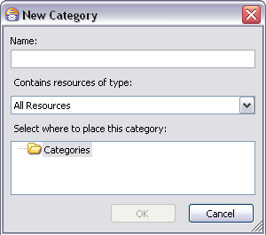
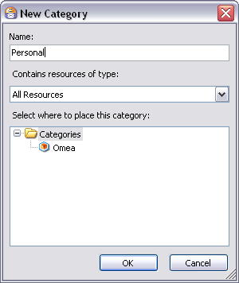
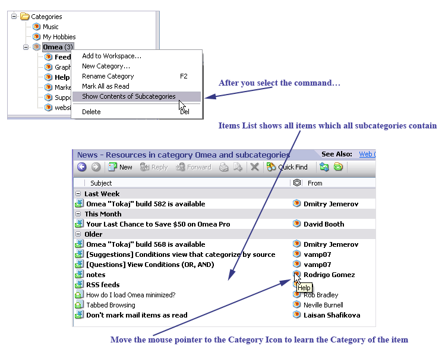

Organizing Using Categories
The major tool for organizing your computers resources in Omea ReaderOmea Pro is called Categories. It’s one of several ways to organize your resources, but since other ways really revolve around this one, let’s do an overview of Categories and understand what they are and how they work.
The Problem with Windows
Have you ever noticed how Windows forces you to file things according to its requirements rather than yours? You have to conform to a hierarchical filing model regardless of whether or not it’s the best approach for the kind of work you do. Furthermore, the Windows file system doesn't enable you to organize any resources other than files. If you want to file something in more than one place, you end up with multiple copies which can end up out of sync.
The Problem with Programs
For e-mail messages, instant message conversations, newsgroup articles, feeds, etc. you have to use some application program, and usually a different program for each type of resource. You can organize each resource type inside the relevant program, but that’s all. You can’t organize files with your e-mail program, or instant messages with your feed reader, and in no case can you really organize different types of resources around some context that’s meaningful to you, and that relates to your daily activities. Nor is there any way you can file the same resource in more than one place (without creating a copy of it, which can easily get out of sync if it is modified!)
For example, suppose you have a project "Project ABC". For this project you have several activities: communicating with suppliers, keeping track of work progress of team members, and updating your boss. Until now, there has been no way that you could file all the documents, e-mail messages, instant messages, contacts, tasks, etc. that you need to work on Project ABC and its various activities in one place where you can access any of them fast when you need them. If there are some resources that relate to both your supplier management and your team management activities, you could not file the same resource under both activities and access it from the context of either.
The Problem with Programs
Newsgroup articles, web pages, and syndicated feeds require you to use some application program, and usually a different program for each type of resource. You can usually organize each resource type inside the relevant program, but that’s all. You can’t organize web pages with your newsgroup reader program, or feed postings with your web browser, and in no case can you really organize different types of resources around some context that’s meaningful to you, and that relates to your daily activities. Nor is there any way you can file the same resource in more than one place without creating a copy.)
For example, suppose you have a project "Project ABC". For this project you have several activities: researching web sites for a whitepaper, monitoring an RSS feed, and moderating a newsgroup. Until now, there has been no way that you could file all the different kinds of resources you need to work on Project ABC and its various activities in one place where you can access any of them fast when you need them. If there are some web pages that relate to both your whitepaper research and your newsgroup moderator activities, you could not file the same resource under both activities and access it from the context of either.
Omea ReaderOmea Pro changes all this…
How Omea ReaderOmea Pro is Different
With Omea ReaderOmea Pro you can create any kind of filing system you want... hierarchical, non-hierarchical, or a little of both. Your filing system can be as simple or as complex as you wish. It can contain any type of resource Omea ReaderOmea Pro supports... files, e-mail messages, news articles, feed postings, etc. supports. It doesn't matter whether a resource is a file stored somewhere in the Windows file system or attached to an e-mail message in Outlook, or if it is actually an e-mail message stored by MS Outlook, or even a Web page bookmarked in the Mozilla browser. You can file it in your filing system anywhere, in as many places as you need. It does’t matter whether a resource is a newsgroup article or a Web page bookmarked in the Mozilla browser. You can file it in your filing system anywhere, in as many places as you need.
Important Concepts for Categories
What are Categories?
Categories are the basis for your filing system in Omea ReaderOmea Pro. Technically, a Category is just a label with which you can associate as many resources as you want. It might help to think of Categories like the "pigeonholes" in an antique roll-top desk. You can stuff anything you want into one: envelopes, documents, cheques, etc. You can then retrieve any item later. Unlike the old desk, with Omea ReaderOmea Pro you can stuff the same thing into several different pigeonholes (it’s still just one thing...no copies!). And if you forget where you put something, you can quickly find it using the built-in search engine.
What are Single-resource Categories and Why are They Different?
Single-resource Categories are essentially the same as any other Categories. The only differences are:
- Single-resource Categories only contain one type of resource. For example, E-mail Categories contain only e-mail messages.
- Single-resource Categories only show up when you are working in the main window tab for the relevant resource type. For example, E-mail Categories only appear when you have selected the E-mail tab in the main window.
What are Single-resource Categories and Why are They Different?
Single-resource Categories are essentially the same as any other Categories. The only differences are:
- Single-resource Categories only contain one type of resource. For example, RSS/Atom Post Categories contain only RSS or Atom feed postings
- Single-resource Categories only show up when you are working in the main window tab for the relevant resource type. For example, RSS/Atom Post Categories only appear when you have selected the Feeds tab in the main window.
Working with Categories
This section explains how to do various tasks related to creating and managing Categories.
Viewing Categories
You can view your Categories in the Categories folder of the Views and Categories pane. If this pane is not visible, click the Views and Categories button on the pane selector bar (left-hand side of the main window) or press the shortcut which you have assigned to the shortcut using Category Hotkeys plugin.
Viewing Single-resource Categories
Your single-resource Categories appear in a folder named <resource-type> Categories in the Views and Categories pane when the tab for the relevant resource type is selected in the main window. For example, a Category that contains only web pages appears under a folder named "Web Bookmark Categories" when you are working in the Web tab of the main window. If no single-resource categories are defined, the folder for resource-specific Categories does not appear.
To view single-resource Categories:
- Select the relevant tab in the main window (Web, for example).
- If the Views and Categories pane is not visible, show it by clicking the button of the same name on the pane selector bar.
- Expand the <resource-type> Categories folder in the Views and Categories pane. For example, in the Web tab, select the "Web Bookmark Categories" folder if you have Categories that contain only Web pages.
Creating New Categories
You can create new Categories, including single-resource Categories using either:
- Main menu: File | New | Category or...
- Assign Categories dialog: New button
- Categories folder: context menu
- Ctrl+Y
The latter is probably the one you will prefer to use. Here is the procedure step-by-step.
To create a new Category:
- If you want the Category to belong to a Workspace other than All, go to the desired Workspace by clicking its selector on the Workspaces selector bar.
- Show the Views and Categories pane if it is not visible.
- Right-click on the Categories folder and choose New Category on the context menu. The Create New Category dialog appears.
- Type a name for the new category in the Name field.
- Specify the type of resource the new Category should contain by selecting from the drop-down list of resource types. The default is All Resources, which you will probably want to use for most Categories. To create a single-resource Category, select on of the other items in the list (See Tip below).
- Select where to place the new Category:
- If this is your first Category, select the Categories folder (as in picture above).
- If you have other Categories defined, select the Categories folder to create the new Category on the same level.
- If you have other Categories defined and you want to create a hierarchy in which the new Category is a child (or -Category) of an existing Category, select the Category you want as the parent of the new Category.
- If you have created a category for a single resource type, select the folder for that type that automatically appears in the listing of Categories.

New Category dialog

New Category dialog. The new category will be created in Categories folder (which is currently selected)

New Category dialog. The new category will be a subcategory of “Omea”
Unless the tab for the resource type of a new single-resource Category is active in the main window, it may appear that the new Category was not created. For example, if you are focused on Feeds and create a single-resource Category for news articles, you should switch to the News tab, where you will see the new Category in the Views and Categories pane.
Creating Categories from Internet Mailing Lists
When this option is checked, Omea detects when incoming e-mail messages were sent from some Internet mailing list (for example, the groups at groups.yahoo.com) and creates a Category for each mailing list as messages from it arrive. Future messages from the same mailing list are then automatically filed in the relevant Category. Categories are created in the All Workspace.
To auto-create Categories from Internet mailing lists:
- On the main menu, choose Tools | Options.
- In the Options dialog, choose MS Outlook: Outlook Address Books.
- Check the box: Create Categories from Internet mailing lists.
Installing Category Hotkeys Plugin and Assigning Hotkeys for the Categories
To ease your work with Categories, you can download and install the plugin for assigning hotkeys to your Categories (see Options: Plugins). The plugin is available at Omea's web site plugins page.
Plugin Installation
To install the plugin, unpack it to the Omea installation directory, go to Tools | Options | Omea | Plugins, click on “Add...” and select the CategoryHotkeys.dll file. Then restart Omea.
Assigning Hotkeys to Categories
After the plugin is installed, and you have created some Categories, you can assign the hotkeys for each category. The hotkeys will allow you to assign the category to the selected resources and to remove the category from the selected resources.
To assign a hotkey for the Category, right-click any category and select Assign Hotkeys… In the window which opens press or type the key(s) you would like to use to assign the selected Category and click OK to save the hotkey.
Renaming a Category
Once you have created a Category, you can rename it any time. The updated name is displayed in all Workspaces where the Category is accessible, and the Category contains all the same resources it contained before the name change.
You can rename a Category using the same techniques available in Windows Explorer to rename a file:
- In the Views and Categories pane, select the Category; then click it to trigger in-place renaming.
- Right-click the Category and choose Rename Category on the context menu.
- Press F2
Removing a Category
Categories need not be permanent fixtures. As things change with your day to day activities, you may find some Category is no longer relevant or useful. In that case, you can remove it from Omea.
When you remove a Category, you do not remove or delete from disk any of the resources it contained. You will still be able to find the resources using Search, and access the resources from Omea.
To remove a Category:
- Select the Category in the Views and Categories pane.
- Press the Delete (Del) key or right-click and select Delete.
Filing Resources in Categories
Once you have your filing system of Categories in place, you will want to file various resources into them. There are three ways to file resources in Categories:
- Drag-and-drop (resources to a Category or Category to the resources)
- Links panel
- Resource List context menu (right-click the selected items in the Items List)
- Press Ctrl+Y and then select the desired Category in the Assign Categories dialog.
Drag-and-drop
Use two types of drag and drop to associate your resources with Categories:
- You can drag one or more selected resources from the Items List and
drop your selection onto any existing Category. If you want to file the
same resource(s) in more than one Category, repeat the drag-and-drop for
each Category where you want to file it/them. For example, you can drag
a Newsgroup article from the list of articles and drop it into any Category,
repeating the action to file the same article in multiple Categories.
In some cases, you may be able to drag resources from a pane in the left-hand Navigation panel. For example, you can drag one or more items from the Correspondents pane into a Category. - Drag a Category in the Views and Categories pane, drop it to the selected resource in the Items List. Please note that it works only for one item in the Items List.
Links Panel
When the Links panel is open in the Links and Actions pane, you can click Assign Categories to pop up a dialog in which you can file the currently selected resource in one or multiple Categories.
You can use the New button in the Assign Categories dialog to create a new Category "on the fly".
Resource List Context Menu
The context menu of each resource in the main window’s Resource List contains an item Assign Category. In the resulting dialog you can select one or more Categories in which to file the selected resource. For example, in the Resource List for web pages, right-click on any listed web page and choose Assign Category. This action is applied to all selected resources.
Viewing the Contents of Subcategories
Suppose you have a nested hierarchy of Categories which include a number of subcategories. To view the contents of subcategories you usually need to select the desired subcategory in the list of Categories so that the contents of subcategories appears in the Items List.
Now you can view items of a Category and all items of subcategories which it contains all at once. Just select the desired Category (which contains subcategories), right-click it and select Show Contents of Subcategories. The items which the subcategories contain, appear in the Items List along with the items which the top-level Category contains.

Now the Items List shows all items which the subcategories contain
Categorizing Web Pages in Internet Explorer©, Mozilla© and Firefox©
Now you can assign Categories to the web pages you browse using such browsers as Internet Explorer©, Mozilla© and Firefox©. After the plugins are installed (the plugins are installed when you install Omea), and Omea toolbar appears in browsers, click the Annotate and Categorize button on this toolbar. In the Annotate Bookmark window which opens, type the bookmark name and annotation and select one of the previously created Categories.
See more about categorizing using browser plugins here — Working with IE Add-on and Working with Mozilla and Firefox browsers plugin.